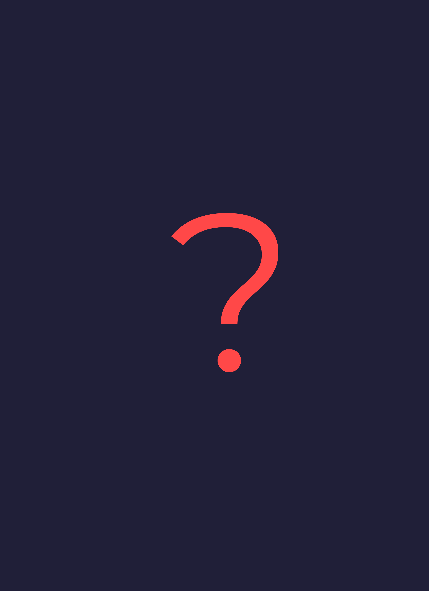

Profesie
Andrej Sládkovič bol veľmi pracovitý, pracoval ako:
- evanjelický kňaz
- básnik
- kritik literárnych a dramatických prác
- publicista
- prekladateľ
- pomocný učiteľ

Strana 1
Strana 2
Strana 3
Krupina
Júlia Sekovičová
Radvaň
Narodený v Krupine
Vzdelávanie
Spoznal Marínu Pišlovú
Spolu so Samuelom Jurkovičom založili slovenské národné divadlo v Sobotišti
Ordinovaný na evanjelického kňaza, začal pôsobiť v Hrochoti
Bol zaistený a vyšetrovaný, pretože podporoval revolúciu
Začal pôsobiť ako farár v Radvani nad Hronom
Stal sa predsedom Zpěvníkového výboru, ktorého úlohou bolo vydávanie duchovných piesní a náboženských kníh
Ochorel na vodnatieľku
Umrel v Radvani nad Hronom
- Andrej Sládkovič
Andrej Sládkovič bol veľmi pracovitý, pracoval ako:
- Andrej Sládkovič


Vo svojej romantickej poézii spája podnety slovenského folklóru s filozofickou predstavou o ideálnej mravnosti, kráse a dokonalosti človeka. Silné zdroje inšpirácie boli jeho zážitky, citový život, osobné konflikty, situácie v spoločenstve.
- Andrej Sládkovič
- Andrej Sládkovič
HTML: 538 riadkov
CSS: 786 riadkov
JavaScript: 123 riadkov